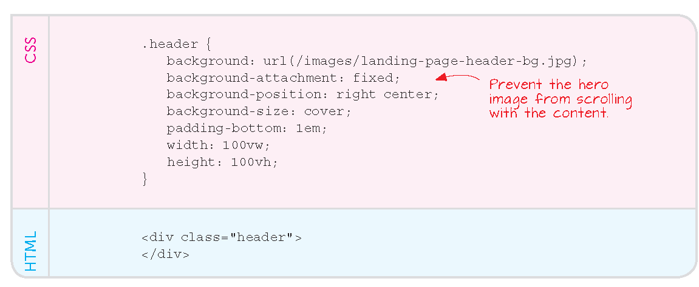
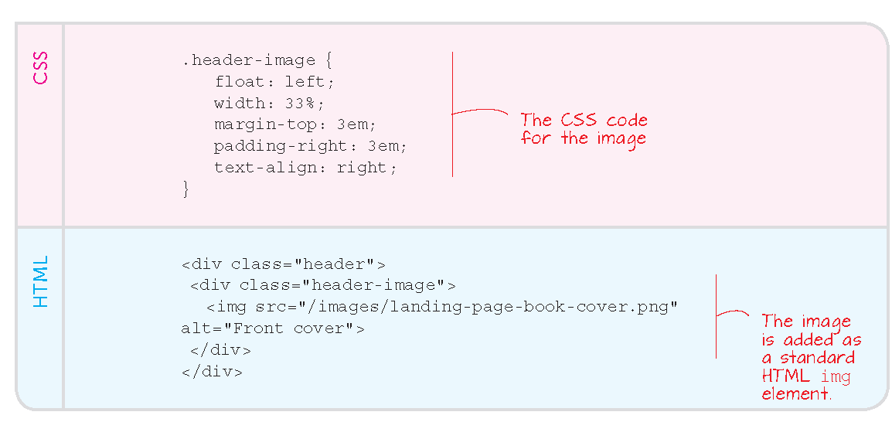

Learn Web
The Limits of HTML
The page orientation
So far, each HTML page is a stand-alone, complete page
Even recurrent elements, e.g., links to reference pages, are repeated
pages might share a common CSS file, but not the HTML structure itself
Case study
unimi.it offers more than 150 study programs
each programme page has a similar structure and most information is actually replicated
yet, in principe we should come up with 150+ HTML pages
Idea: semantic tagging
recurrent parts of the page are annotated by invisible, semantic tags
altough invisible, the tags guide presentation, and can be replicated across the whole platform, e.g., unimi.it
Static layout
So far
pages are intended as rectangular: relatively narrow and tall
like the book page
like the computer screen
Solutions, a
The CSS may define boxes with padding around them
The boxes may float so the browser will assign it dynamically to the available viewport
However, browsers present elements one after the other, until space on the right ends and they continue on a new line below: undesirable effects and even collapse
Experience: floating elements
Elements start overflowing to the line below
Explict placing: not recommended
Experience: boxes with padding
Creating boxes of text: Ex. 9.1
Padding around them: Ex. 9.2
For reference: a better finish
Exercise
Try pair coding with the Live Share extension of VS Code
in your project, Box up the official text from
unimi.itand make it floatmake a menu of navigation links and float it (details in past presentations)
Landing pages
Hero page:
seeks an emotional response
graphics takes over from text
Landing page
extends hero
the page that search engines point
seeks to entice and guide a deeper visit
Example landing page
Make a landing page
Create a hero image that is fixed wrt. scrolling but also contains the claim
go picture-in-picture, e.g.
Fixed landing:
Left picture is the what, background picture is the where or how

lab on Velasca? the other way around? Keep lab and choose an aspirational picture that works for you and your friends
The in-picture
The in-text

Check the final effect with the Live server VS Code extension
Solutions, b
Complex CSS files can define three (computer, tablet and smartphone) or more locales
sense the device and apply the appropriate styles
Example: section with links collapses into the hamburger menu
For refrence: before:: and after::
::after
We can avoid mis-rendering by forcing browsers to create the visual effects in a certain order
The :: notation is for pseudo-elements: we don’t see them in the HTML but they go into the final page.
The CSS is now changing the HTML!
::before
apply a certain style before the browser starts rendering the element
See the example from w3schools
::before, ::after and ::first-letter are advanced CSS language
we only cover them by example
See reference
Styling tables and other structured texts
See the relevant self-learning material at
w3chools and